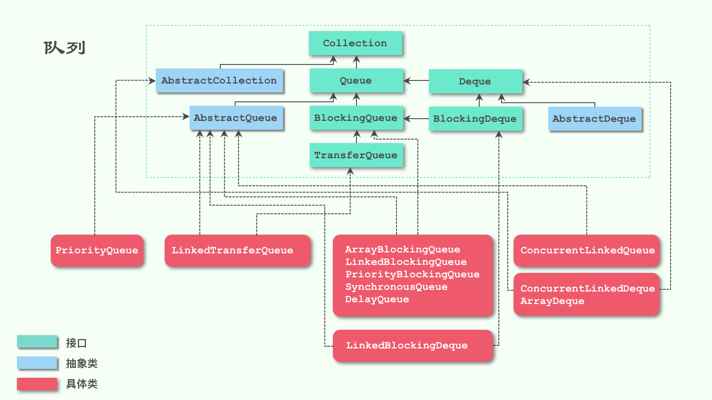

简介
Queue（队列）：一种特殊的线性表，它只允许在表的前端（front）进行删除操作，只允许在表的后端（rear）进行插入操作。进行插入操作的端称为队尾，进行删除操作的端称为队头。
每个元素总是从队列的 rear 端进入队列，然后等待该元素之前的所有元素出队之后，当前元素才能出对，遵循先进先出（FIFO）原则。
下面是 Queue 类的继承关系图：

图中我们可以看到，最上层是 Collection 接口，Queue 满足集合类的所有方法：
add(E e)：增加元素；remove(Object o)：删除元素；clear()：清除集合中所有元素；size()：集合元素的大小；isEmpty()：集合是否没有元素；contains(Object o)：集合是否包含元素o。
队列
Queue
Queue：队列的上层接口，提供了插入、删除、获取元素这3种类型的方法，而且对每一种类型都提供了两种方式，先来看看插入方法：
add(E e)：插入元素到队尾，插入成功返回true，没有可用空间抛出异常IllegalStateException。offer(E e)： 插入元素到队尾，插入成功返回true，否则返回false。
add 和 offer 作为插入方法的唯一不同就在于队列满了之后的处理方式。add 抛出异常，而 offer 返回 false。
再来看看删除和获取元素方法（和插入方法类似）：
remove()：获取并移除队首的元素，该方法和poll方法的不同之处在于，如果队列为空该方法会抛出异常，而poll不会。poll()：获取并移除队首的元素，如果队列为空，返回null。element()：获取队列首的元素，该方法和peek方法的不同之处在于，如果队列为空该方法会抛出异常，而peek不会。peek()：获取队列首的元素，如果队列为空，返回null。
如果队列是空，remove 和 element 方法会抛出异常，而 poll 和 peek 返回 null。
当然，Queue 只是单向队列，为了提供更强大的功能，JDK 1.6 的时候新增了一个双向队列 Deque，用来实现更灵活的队列操作。
Deque
Deque 在 Queue 的基础上，增加了以下几个方法：
addFirst(E e)：在前端插入元素，异常处理和add一样；addLast(E e)：在后端插入元素，和add一样的效果；offerFirst(E e)：在前端插入元素，异常处理和offer一样；offerLast(E e)：在后端插入元素，和offer一样的效果；removeFirst()：移除前端的一个元素，异常处理和remove一样；removeLast()：移除后端的一个元素，和remove一样的效果；pollFirst()：移除前端的一个元素，和poll一样的效果；pollLast()：移除后端的一个元素，异常处理和poll一样；getFirst()：获取前端的一个元素，和element一样的效果；getLast()：获取后端的一个元素，异常处理和element一样；peekFirst()：获取前端的一个元素，和peek一样的效果；peekLast()：获取后端的一个元素，异常处理和peek一样；removeFirstOccurrence(Object o)：从前端开始移除第一个是o的元素；removeLastOccurrence(Object o)：从后端开始移除第一个是o的元素；push(E e)：和addFirst一样的效果；pop()：和removeFirst一样的效果。
可以发现，其实很多方法的效果都是一样的，只不过名字不同。比如 Deque 为了实现 Stack 的语义，定义了 push 和 pop 两个方法。
阻塞队列（BlockingQueue）
BlockingQueue（阻塞队列），在 Queue 的基础上实现了阻塞等待的功能。它是 JDK 1.5 中加入的接口，它是指这样的一个队列：当生产者向队列添加元素但队列已满时，生产者会被阻塞；当消费者从队列移除元素但队列为空时，消费者会被阻塞。
先给出 BlockingQueue 新增的方法：
put(E e)：向队尾插入元素。如果队列满了，阻塞等待，直到被中断为止。boolean offer(E e, long timeout, TimeUnit unit)：向队尾插入元素。如果队列满了，阻塞等待 timeout 个时长，如果到了超时时间还没有空间，抛弃该元素。take()：获取并移除队首的元素。如果队列为空，阻塞等待，直到被中断为止。poll(long timeout, TimeUnit unit)：获取并移除队首的元素。如果队列为空，阻塞等待 timeout 个时长，如果到了超时时间还没有元素，则返回null。remainingCapacity()：返回在无阻塞的理想情况下（不存在内存或资源约束）此队列能接受的元素数量，如果该队列是无界队列，返回Integer.MAX_VALUE。drainTo(Collection<? super E> c)：移除此队列中所有可用的元素，并将它们添加到给定 collection 中。drainTo(Collection<? super E> c, int maxElements)：最多从此队列中移除给定数量的可用元素，并将这些元素添加到给定 collection 中。
BlockingQueue 最重要的也就是关于阻塞等待的几个方法，而这几个方法正好可以用来实现 生产-消费的模型。
从图中我们可以知道实现了 BlockingQueue 的类有以下几个：
ArrayBlockingQueue：一个由数组结构组成的有界阻塞队列。LinkedBlockingQueue：一个由链表结构组成的有界阻塞队列。PriorityBlockingQueue：一个支持优先级排序的无界阻塞队列。SynchronousQueue：一个不存储元素的阻塞队列。DelayQueue：一个使用优先级队列实现的无界阻塞队列。
ArrayBlockingQueue
ArrayBlockingQueue 是一个底层用数组（准确的说是一个循环数组（可以类比一个圆环），所有的下标在到达最大长度时自动从0继续开始。）实现的有界阻塞队列，有界是指他的容量大小是固定的，不能扩充容量，在初始化时就必须确定队列大小。它通过可重入的独占锁 ReentrantLock 来控制并发，Condition 来实现阻塞。
此队列按照先进先出（FIFO）的原则对元素进行排序。默认情况下不保证访问者公平的访问队列，所谓公平访问队列是指阻塞的所有生产者线程或消费者线程，当队列可用时，可以按照阻塞的先后顺序访问队列，即先阻塞的生产者线程，可以先往队列里插入元素，先阻塞的消费者线程，可以先从队列里获取元素。通常情况下为了保证公平性会降低吞吐量。我们可以使用以下代码创建一个公平的阻塞队列：
1 | ArrayBlockingQueue fairQueue = new ArrayBlockingQueue(1000, true); |
访问者的公平性是使用可重入锁实现的，代码如下：
1 | public ArrayBlockingQueue(int capacity, boolean fair) { |
LinkedBlockingQueue
LinkedBlockingQueue 是一个底层用单向链表实现的可以是有界的也可以是无界的（Integer.MAX_VALUE）阻塞队列，采用 ReentrantLock 来控制并发，添加采用的是 putLock，移除采用的则是 takeLock，使用两个独占锁来控制消费和生产。此队列按照先进先出的原则对元素进行排序。
PriorityBlockingQueue
PriorityBlockingQueue是一个支持优先级的无界队列。默认情况下元素采取自然顺序排列，也可以通过比较器 comparator 来指定元素的排序规则。元素按照升序排列。
SynchronousQueue
SynchronousQueue 是一个不存储元素的阻塞队列。每一个 put 操作必须等待一个 take 操作，否则不能继续添加元素。SynchronousQueue 可以看成是一个传球手，负责把生产者线程处理的数据直接传递给消费者线程。队列本身并不存储任何元素，非常适合于传递性场景,比如在一个线程中使用的数据，传递给另外一个线程使用，SynchronousQueue 的吞吐量高于 LinkedBlockingQueue 和 ArrayBlockingQueue。
案例：
1 | /** |
DelayQueue
DelayQueue 是一个支持延时获取元素的无界阻塞队列。队列使用 PriorityQueue 来实现。队列中的元素必须实现 Delayed 接口，在创建元素时可以指定多久才能从队列中获取当前元素。只有在延迟期满时才能从队列中提取元素。我们可以将 DelayQueue 运用在以下应用场景：
- 缓存系统的设计：可以用
DelayQueue保存缓存元素的有效期，使用一个线程循环查询DelayQueue，一旦能从DelayQueue中获取元素时，表示缓存有效期到了。 - 定时任务调度。使用
DelayQueue保存当天将会执行的任务和执行时间，一旦从DelayQueue中获取到任务就开始执行，从比如TimerQueue就是使用DelayQueue实现的。
案例：
1 | /** |
TransferQueue
TransferQueue 是 JDK 1.7 对于并发类库新增加的一个接口，它扩展自 BlockingQueue，所以自然保持着阻塞队列的所有特性。
有人这样评价它：
TransferQueue是ConcurrentLinkedQueue、SynchronousQueue (公平模式下)、无界的LinkedBlockingQueues等的超集。
TransferQueue 对比与 BlockingQueue 更强大的一点是，生产者会一直阻塞直到所添加到队列的元素被某一个消费者所消费（不仅仅是添加到队列里就完事）。新添加的 transfer 方法用来实现这种约束。顾名思义，阻塞就是发生在元素从一个线程 transfer 到另一个线程的过程中，它有效地实现了元素在线程之间的传递（以建立 Java 内存模型中的 happens-before 关系的方式）。
我们来看看该接口提供的标准方法：
tryTransfer(E e)：若当前存在一个正在等待获取的消费者线程（使用take()或者poll()函数），使用该方法会即刻转移/传输对象元素e并立即返回true；若不存在，则返回false，并且不进入队列。这是一个不阻塞的操作。transfer(E e)：若当前存在一个正在等待获取的消费者线程，即立刻移交之；否则，会插入当前元素e到队列尾部，并且等待进入阻塞状态，到有消费者线程取走该元素。tryTransfer(E e, long timeout, TimeUnit unit)：若当前存在一个正在等待获取的消费者线程，会立即传输给它；否则将插入元素e到队列尾部，并且等待被消费者线程获取消费掉；若在指定的时间内元素e无法被消费者线程获取，则返回false，同时该元素被移除。hasWaitingConsumer()：判断是否存在消费者线程。getWaitingConsumerCount()：获取所有等待获取元素的消费线程数量。
其实 transfer 方法在 SynchronousQueue 的实现中就已存在了，只是没有做为 API 暴露出来。SynchronousQueue 有一个特性：它本身不存在容量，只能进行线程之间的元素传送。SynchronousQueue 在执行 offer 操作时，如果没有其他线程执行 poll，则直接返回 false。线程之间元素传送正是通过 transfer 方法完成的。
TransferQueue 相比 SynchronousQueue 用处更广、更好用，因为你可以决定是使用 BlockingQueue 的方法（例如 put 方法）还是确保一次传递完成（即 transfer 方法）。在队列中已有元素的情况下，调用 transfer 方法，可以确保队列中被传递元素之前的所有元素都能被处理。
从图中我们可以知道实现了 TransferQueue 的类有：
LinkedTransferQueue：一个由链表结构组成的无界阻塞队列。
案例：
1 | /** |
阻塞双端队列（BlockingDeque）
BlockingDeque（阻塞双端队列）在 Deque 的基础上实现了双端阻塞等待的功能。BlockingDeque 也提供了双端队列该有的阻塞等待方法：
putFirst(E e)：在队首插入元素，如果队列满了，阻塞等待，直到被中断为止。putLast(E e)：在队尾插入元素，如果队列满了，阻塞等待，直到被中断为止。offerFirst(E e, long timeout, TimeUnit unit)：向队首插入元素。如果队列满了，阻塞等待 timeout 个时长，如果到了超时时间还没有空间，抛弃该元素。offerLast(E e, long timeout, TimeUnit unit)：向队尾插入元素。如果队列满了，阻塞等待 timeout 个时长，如果到了超时时间还没有空间，抛弃该元素。takeFirst()：获取并移除队首的元素。如果队列为空，阻塞等待，直到被中断为止。takeLast()：获取并移除队尾的元素。如果队列为空，阻塞等待，直到被中断为止。pollFirst(long timeout, TimeUnit unit)：获取并移除队首的元素。如果队列为空，阻塞等待 timeout 个时长，如果到了超时时间还没有元素，则返回null。pollLast(long timeout, TimeUnit unit)：获取并移除队尾的元素。如果队列为空，阻塞等待 timeout 个时长，如果到了超时时间还没有元素，则返回null。removeFirstOccurrence(Object o)：从队首开始移除第一个和o相等的元素。removeLastOccurrence(Object o)：从队尾开始移除第一个和o相等的元素。
从图中我们可以知道实现了 BlockingDeque 的类有：
LinkedBlockingDeque
LinkedBlockingDeque：是一个有界的双端队列，底层采用一个双向的链表来实现，在 LinkedBlockingQueue 的 Node 实现多了指向前一个节点的变量 prev。并发控制上和 ArrayBlockingQueue 类似，采用单个 ReentrantLock 来控制并发，这里是因为双端队列头尾都可以消费和生产，所以使用了一个共享锁。它实现了 BlockingDeque 接口，继承自 BlockingQueue 接口，多了 addFirst，addLast，offerFirst，offerLast，peekFirst，peekLast 等方法，用来头尾生产和消费。LinkedBlockingDeque 的实现代码比较简单，基本就是综合了 LinkedBlockingQueue 和 ArrayBlockingQueue 的代码逻辑，这里就不做分析了。
非阻塞队列
ConcurrentLinkedQueue
ConcurrentLinkedQueue：（线程安全的无界队列，底层采用单链表，支持 FIFO。）是一个基于链接节点的无界线程安全队列，它采用先进先出的规则对节点进行排序，当我们添加一个元素的时候，它会添加到队列的尾部；当我们获取一个元素的时候，它会返回队列头部的元素。
案例：
1 | public class _04_T_ConcurrentQueue { |
ConcurrentLinkedDeque
ConcurrentLinkedDeque：线程安全的双端无界非阻塞队列，底层采用双向链表，支持 FIFO 和 FILO。
If you like this blog or find it useful for you, you are welcome to comment on it. You are also welcome to share this blog, so that more people can participate in it. If the images used in the blog infringe your copyright, please contact the author to delete them. Thank you !